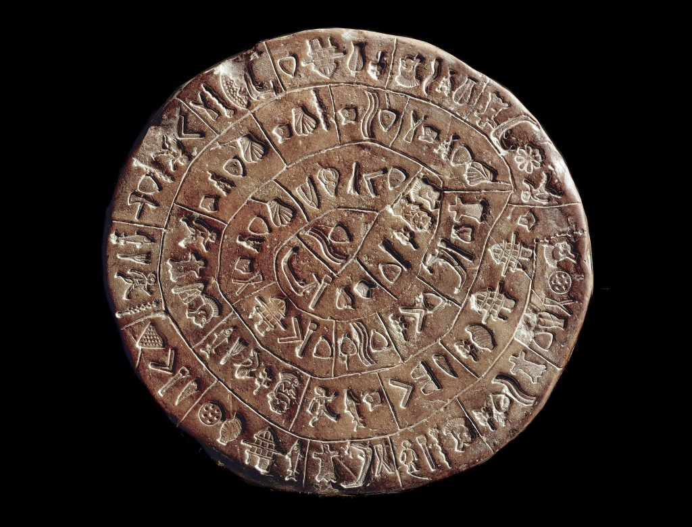

Phaistos Disc
The Phaistos Disc is a famous archaeological find from the Minoan civilization, discovered in the Minoan palace of Phaistos. It is a unique disc made of fired clay, featuring a spiral of stamped symbols.

Learn more about it here.